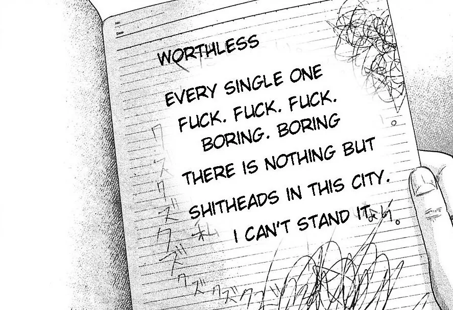
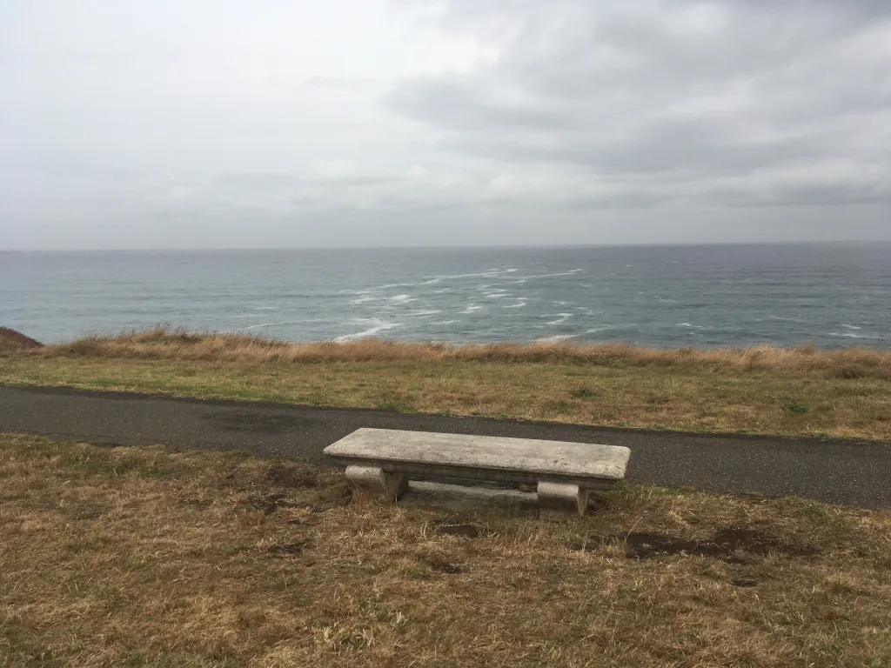

Inicio
|
Fotos


Blog o artículos o notas
Aqui podrás encontrar todo lo que he escrito para esta pagina.
(9/11/2026) No volveré a pagar nada digital
(3/11/2026) “¿Debo morir yo?ˮ - La decisión de La Alianza (Fecha original 04/09/2026)
(2/11/2026) Manifiesto Virtual para el Fin de Internet (Fecha original 01/07/2026)
(1/11/2026) Árbol de la Vida - Minecraft
(30/10/2026) Introducción